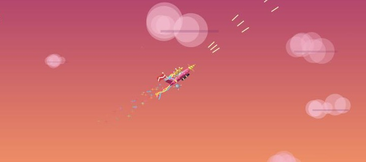
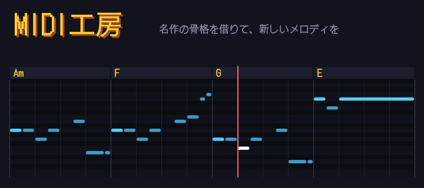

ブラウザのゲーム
ガチ空戦
F-22 と Su-57 の本気のドッグファイト。本物に近い飛び方、ミサイルとフレア、引きすぎると目の前が暗くなる G。ゴテゴテ空戦の、大人版です。
- 遊び方
- パソコンのキーボード・PS などのコントローラーで（スマホは未対応）
- 料金
- 無料。登録もインストールも要りません
仕事の道具のほかに、作って遊んでいるものです。どれも無料で、ブラウザで開けば、すぐ遊べます。
ブラウザのゲーム
F-22 と Su-57 の本気のドッグファイト。本物に近い飛び方、ミサイルとフレア、引きすぎると目の前が暗くなる G。ゴテゴテ空戦の、大人版です。

ブラウザのゲーム
撃たれるたびに、飾りが一つずつ取れていく空中戦。丸裸で撃たれたら墜落です。

ブラウザの道具（作っている途中です）
名作の MIDI から、コード進行だけを借りて、新しいメロディを作ります。押すたびに別のメロディ。ファミコンの音と歪んだギターの、ゲームロックで鳴ります。音感がなくても、聴いて選ぶだけです。